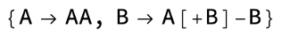
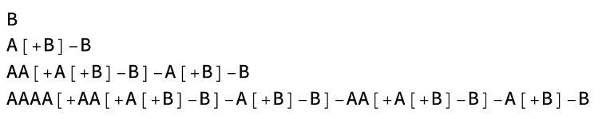
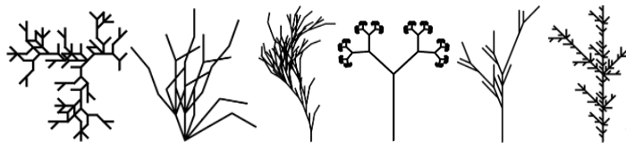
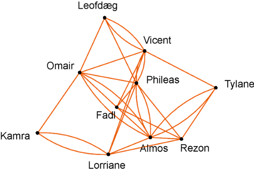
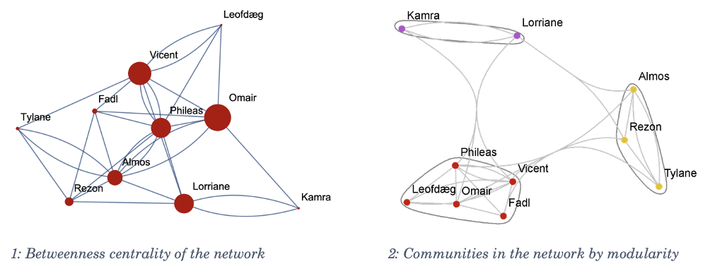

The Human Ecology Essay (HEE) is a senior year graduation requirement at College of the Atlantic. It is an opportunity to reflect on one's learning journey at the college and to share one's unique perspectives on human ecological investigations and practices. Each year, College of the Atlantic publishes a selection of these short essays. This is mine.
I address this essay to the mathematically sceptical human ecologists. Those that would prefer not to think about maths if they can prevent it. In the next few pages, I hope to plant a grain in your mind:
Mathematics and ontology of mathematics are human ecology.
I will introduce you to a selection of mathematical tools and topics which I find personally exciting and stimulating as a young human ecologist; subjects that showcase how diverse and surprising mathematics can be. These are subjects that may not feel like maths.
I will not explain any of these topics thoroughly. Rather, I hope to discuss them broadly, drawing on the human ecological ethos to make them feel grounded, relevant, and stirring to you, especially if you (gasp*) don’t usually like thinking about maths. In the process I hope to convey my vision of human ecology and mathematics by example.
The opening paragraph of the Introduction section to the Princeton Companion to Mathematics titled “What is mathematics about?” begins:
“It is notoriously hard to give a satisfactory answer to the question, “What is mathematics?” The approach of this book is not to try.”
Because it’s so difficult to pin down exactly what maths is, it is often conceptually explained by drawing attention to the mathematician's raw materials (numbers, sets, relationships...) and conceptual tools (counting, ordering, functions...). This can be an excellent approach as it captures the blurriness of the boundaries between mathematics and other areas of knowledge, but it can also highlight how abstract and divorced from day-to-day human experiences and intuitions the subject can be.
There is ongoing debate about the nature of mathematics and its relationship to human experience. While mathematics is an essential part of human culture and some of the earliest known writings are records of mathematical computation (Mathematical Treasure: Clay Tablets from Sumer, n.d.), many other living things perform what we might recognise as mathematical activities. Slime moulds can solve mazes (Nakagaki et al., 2000), crows can count and understand the concept of zero (Animals Can Count and Use Zero. How Far Does Their Number Sense Go?, 2021), and some fish have even shown ability to perform addition and subtraction (Universität Bonn: Fish Can Calculate, n.d.). For examples of mathematical processes, we needn't even look to living things. It seems that mathematics has an uncanny ability to predict or explain physical phenomena, from the motion of planets to climate change and ocean circulation. Eugene P. Wigner explored this tendency in his 1960 paper: The Unreasonable Effectiveness of Mathematics in the Natural Sciences.
I bring up these examples to suggest that mathematics is not simply a toolbox of abstract operations and raw materials. It is a powerful and mysterious way of observing and describing the world. In its most general form, I believe maths is all about seeing and understanding patterns and relationships between things (we can discuss the specific nature of these things another time). How could an undertaking of this nature not reflect our environmentally embedded experiences? Ontological questions about mathematics demand that we think about our lived experiences, our environments, our biology, the ecology of our species, and our relationships to all of these. What does it mean to do maths? Why do we do it? How do mathematical insights frame human experiences and affect human decision making? What can mathematics tell us about our relationships to one another, to our environments, our thoughts, lived experiences, and the behaviours of our institutions and societies? A lot (I bet). Mathematics is one of the lenses through which we make sense of the world around us. It is an inherently human-ecological practice.
If you do maths regularly, you probably do at least some of it with the help of a computer. In fact, since the democratisation of personal computing, the use of computers to do maths has all but replaced traditional pen-and-paper mathematics in most contexts. Computers can automate tedious calculations and open previously inaccessible realms of mathematical exploration. They can also be used to solve problems that would be difficult or impossible for humans to tackle on their own. For this reason, my mathematical explorations all make use of machine computation, although they do not require a computer to reproduce. Let’s get started!
In 1968, Aristid Lindenmayer proposed a method to model the branching patterns produced by various species of growing algae. His approach consisted of iteratively applying a substitution rule to a string of characters representing plant algal cells (Lindenmayer, 1968). L-systems have proved to be useful in modelling many biological phenomena. Most famously, they have been used to model the growth of plants, but L-systems are used in fields as diverse as architecture, music composition, and weaving (Goel & Rozenhal, 1991).
Imagine a string of characters or a single character such as “B”. Suppose we want to transform this object according to the following rule:

We can apply this rule to “B” by replacing every A with AA and every B with A[+B]-B. Starting with “B”, what happens when we apply the substitution rule three times? As we go, we get:

Let’s interpret the final transformed string as instructions to draw a tree: Start at any point on the page. This is the base of your tree. As you read through the string, refer to the following table for specific instructions.
|
A |
Draw a branch |
|
B |
Draw a branch with leaves |
|
[+A or [+B |
Start a new branch leaning to the right from the end of the last branch you drew |
|
]-A or ]-B |
Start a new branch leaning to the left from branching point one level back from the last branch you drew |
By the end, you should have one of these (try it and find out which one 😁):

Isn’t it fascinating and exciting to see that such a simple process can capture the branching patterns in the growth of plants? Doesn’t it animate you with wonder and curiosity?
In 1636, Leonard Euler published Solutio problematis ad geometriam situs pertinentis, in which he presented a solution to the problem of the seven bridges of Königsberg. The problem was to find a walk through the city, crossing each of its seven bridges exactly once. The techniques Euler used to prove that such a path could not exist laid the foundations of what is now called graph theory (Biggs et al., 1999). Graph theory is the study of networks. It is used to model relationships between objects, and its insights have many applications from studying social networks, disease spread, or internet usage, to city sprawl, efficient transportation, food chains, and brains.
At its core, a graph is a bunch of points (called vertices) that are connected by lines (called edges) to each other in an arbitrary way. For example: Some of my friends know each other, and all my friends have other friends that I have never met. Suppose I was to make a graph where all of us were points connected by lines to our respective friends, it might look something like this:

There are many directions one might go from here. Maybe we want to know the fastest ways for gossip to spread throughout the network; to do this, we would compute the “betweenness centrality” of the graph, a measure of how often a node is on the shortest path between two other nodes. The nodes with highest betweenness centrality are the ones which have the most influence on the flow of information through the network (Betweenness Centrality - Neo4j Graph Data Science, n.d.).

Another thing we might do is look for communities in the network. Communities are “subset[s] of nodes within the graph such that connections between the nodes are denser than connections with the rest of the network” (Radicchi et al., 2004). These communities are easier to analyse qualitatively. For instance, one might contain my friends from college, another might be family friends, or maybe friends from high school.
Again, isn’t this amazing? With very little information about the connections between just a few people we can start to draw a picture of meaningful properties of their shared social network. Just consider what this might tell you about the connections in your own life, not just to other people, but the connections you find between things that you experience.
How do L-systems help us to think about plants? How do graphs help us think about social networks? How does mathematical thinking affect our interpretation and relationships to our experiences and environments? There is no single answer to these questions, but mathematics can help us to explore all of them in new ways.
It's important to strike a balance between overreliance on mathematics, and over reluctance to use it. While the former can lead to a lack of flexibility in problem solving, the latter can also be dangerous. Consider the mathematical models used to predict the effects of climate change on the environment. These are indispensable tools, but they should be used in dialogue with other perspectives such as lived experiences from the communities already affected or predicted to be affected by climate change, and ethical considerations regarding proposed climate change responses.
Mathematics provides a framework for interpreting the world around us systematically, and a language to share these interpretations. It primes us to appreciate our experiences in new ways. It is a vast interdisciplinary landscape of secrets and possibilities waiting to be explored that may reveal as much about the world as it does about our own minds. As human ecologists, then, we should all be very interested in maths.
Animals Can Count and Use Zero. How Far Does Their Number Sense Go? (2021, August 9). Quanta Magazine. https://www.quantamagazine.org/animals-can-count-and-use-zero-how-far-does-their-number-sense-go-20210809/
Betweenness Centrality—Neo4j Graph Data Science. (n.d.). Neo4j Graph Data Platform. Retrieved 22 February 2023, from https://neo4j.com/docs/graph-data-science/2.3/algorithms/betweenness-centrality/
Biggs, N. L., Lloyd, E. K., & Wilson, R. J. (1999). Graph Theory 1736-1936 (New edition). Clarendon Press.
Goel, N. S., & Rozenhal, I. (1991). Some Non-Biological Applications of L-Systems. International Journal of General Systems, 18(4), 321–405. https://doi.org/10.1080/03081079108935155
Gowers, T., Barrow-Green, J., & Leader, I. (2010). The Princeton Companion to Mathematics. Princeton University Press.
Lindenmayer, A. (1968). Mathematical models for cellular interactions in development I. Filaments with one-sided inputs. Journal of Theoretical Biology, 18(3), 280–299. https://doi.org/10.1016/0022-5193(68)90079-990079-9)
LSystem | Wolfram Function Repository. (n.d.). Retrieved 21 February 2023, from https://resources.wolframcloud.com/FunctionRepository/resources/LSystem/
Mathematical Treasure: Clay Tablets from Sumer. (n.d.). Mathematical Association of America. Retrieved 20 February 2023, from https://www.maa.org/press/periodicals/convergence/mathematical-treasure-clay-tablets-from-sumer
Nakagaki, T., Yamada, H., & Tóth, Á. (2000). Maze-solving by an amoeboid organism. Nature, 407(6803), Article 6803. https://doi.org/10.1038/35035159
Radicchi, F., Castellano, C., Cecconi, F., Loreto, V., & Parisi, D. (2004). Defining and identifying communities in networks. Proceedings of the National Academy of Sciences, 101(9), 2658–2663. https://doi.org/10.1073/pnas.0400054101
Study shows: Fish can calculate. (n.d.). Universität Bonn. Retrieved 20 February 2023, from https://www.uni-bonn.de/en/news/060-2022
Wigner, E. P. (1960). The unreasonable effectiveness of mathematics in the natural sciences. Richard courant lecture in mathematical sciences delivered at New York University, May 11, 1959. Communications on Pure and Applied Mathematics, 13(1), 1–14. https://doi.org/10.1002/cpa.3160130102